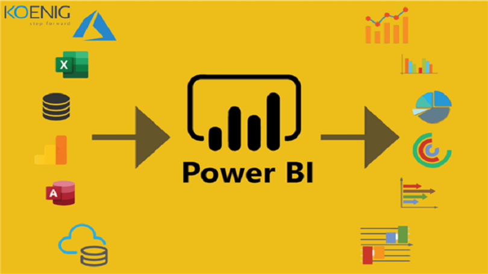
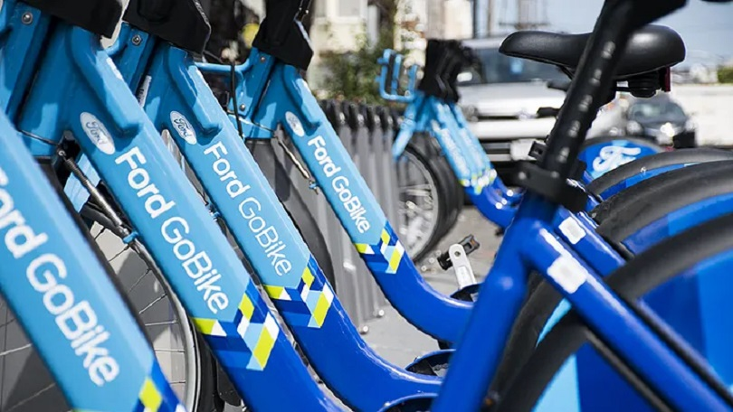

As a dedicated enthusiast in the realms of data science and analytics,
I thrive on leveraging my skills to derive meaningful insights and
contribute to data-driven decision-making. With a keen eye for detail
and a commitment to continuous learning, I am enthusiastic about
tackling challenges and driving innovation in the ever-evolving field of data.
In my Python Projects portfolio, I present a collection of data-driven endeavors where I've harnessed the power of Python for comprehensive data analysis and insightful data science solutions..

I showcase my adeptness in transforming raw data into compelling visual narratives. Through a series of projects, I've demonstrated my proficiency to create dynamic dashboards, and interactive data visualizations.

In my Tableau Projects portfolio, I showcase my expertise in transforming raw data into meaningful insights through compelling visualizations and interactive dashboards.

These projects reflect my proficiency in crafting SQL queries and data manipulation. I present a compilation of endeavors showcasing my mastery in managing and extracting valuable insights from databases.

Built two $50,000 investment portfolios containing four stocks (AAPL, AMD, MSFT, ORCL). The first portfolio has equal weights and second portfolio was be optimized with a weighting allocation that provides the best return, adjusted for risk.

Explored Ford Gobike company a dataset containing user type, member gender, bike share for all trip and other variables for approximately 184,000 samples. I looked at how the duration of trips changes with respect to DateTime and customer type.